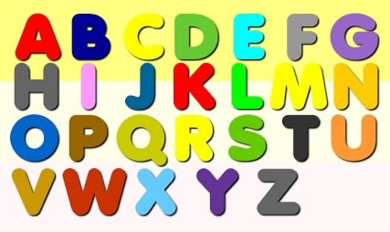
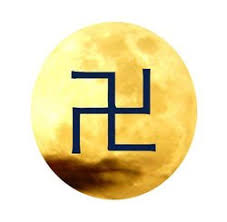

六，大勢至菩萨.......西洋文化与东方
不要輕視西洋文化，它也並不像中國人故步自封那樣的認為西 洋文化短淺。

可知 A 是個什麼？
甲：英文第一個字母，撲克牌的大老 A。
A：A是箭。它的引申又表矛。它的物理意義表時間。
甲：這就差了，西洋物理學是以 t 表時間，是英文 T 的小寫。
A：那是一群物理大科學家不懂宇宙史。宇宙的第一是時間， 宇宙的第一推動力也是時間，宇宙中的萬有也都是在時間 A 的基礎上產生的。 A的象形就是箭頭。就連西洋人自己也不知自己的 文字是象形文字。 A 的神學意義表靈，表從宙心飄離的靈。
B：可知 B 是何物？是弓。 B 是弓的象形字。 B 表對時間箭的發射，B 又是數位8的變形，數位 8 表發，表發射。B 又表八宮，更具體來說是表西洋女王。表復仇女神、戰爭女神。表西洋女王手中的小神弓。它的引申又表宙心大日，也同漢字日一樣，是太陽的象形字。
萬有萬物都是箭的造化，但宇宙第一推動力是B。 B 與漢字日一樣，表圓中一點黑，表晶瑩玉白當中黑。
C： 可知 C 是何物？是月亮、月牙彎刀、月亮船、月亮人、 月亮神、月光。
D： 這回大概明白了，D 表甲胄、表盾牌。表承受、荷載，引申為大地。
A表時間箭、B表空間弓、C表月亮人、D表滋養萬物的大地。 它的引申也表反射。
E： E表男性，是公的。
F： F表女性，表雌，表比雄差一橫。
G： G表和合產生的下一代，它生於月宮。
H： H表貫通天地的宇宙人。
I： I表凡人。

甲： 英文字母表中最後三個是 X Y Z？
A： X表既濟、Y表未濟，引申為變化。 Z表變化的結果。 Z是大十字的象形，表大毀滅，表宇宙一次大循環的終結。Z是太極圖的象形，是佛門萬字符號的象形。Z 又表示最原始的生命量子。它表示死亡，又表示新生的原始。
| 上 一 頁 | 下 一 頁 | 回 主 頁 |
Email: miduoyuan@126.com